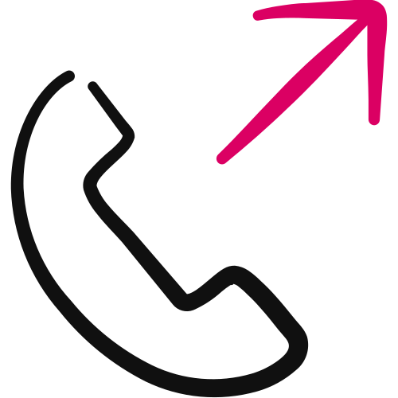

Money Magnet™ · Step 4 · The Sniper Close™ Sequence · Close 1 of 4 · Phase 1 · Launch
The ASK™ Close
Your first close. You invite the room to apply for a free call, and one call does the rest.

You'll leave with the whole ASK™ flow, from the invitation on stage to the onboarding call, and the list of what to build so it works every week.
- It's the Phase 1 close. A free weekly micro event, and an invitation to apply for a free call. 01
- The sale happens on the call. That's what makes it the easiest close to start with. 02
- Three steps: Ask, Share, Kickstart. Invite, talk, then get them started. 03
- One call closes it. A series of specific questions leads them to close themselves. 05
- Move up on the numbers. 20%+ landing page conversion and 50–100 survey responses in one cycle. 07
01
When You Use It
The ASK™ Close is the close for Phase 1, Launch. It's where every coach starts.
In Phase 1 you run a short, free micro event every week. It lasts 60–90 minutes. There's no VIP and no upgrades, so nothing feels complicated, for you or for them.
At the end of the event, you don't sell anything from the stage. You invite the people who want help to apply for a free call. The sale happens on the call.
- Phase
- 1 · Launch, which proves your message
- The event
- A free micro event, 60–90 minutes, every week
- It sells
- Your Membership Offer, $3K–$5K+ a year (paid annually at 20%–25% off the monthly), sold on the call
- Then
- The onboarding call, and the upsell from there
- The goal
- Your first 3–5 paying clients
You're ready when
You have your offer built and your Sniper Presentation™ written. That's all Phase 1 needs. There's no benchmark to hit first, because this is where you start.
It stays with you
You don't drop the ASK™ Close when you move up. Each phase adds one new close, and the earlier ones stay available. In Phase 2 you still have the ASK™ Close beside the JOIN™ Close.
02
Why It Works
The closes don't differ by how much money changes hands. They differ by where the conversation sits next to the sale.
With the ASK™ Close, the conversation is the sale. Nobody has to decide anything in the room. They only have to raise their hand and apply.
That makes it the right first close. In Phase 1 your message is still being proven, and you're still learning to run an event. Asking for an application is a small, easy yes. The big yes happens one to one, on a call, where you can hear exactly where they are.
Give the room a first yes they can say today. In Phase 1, that yes is "I'll apply."
It also feeds the Phase 1 loop. Every event, every survey and every call teaches you how your people talk about their problem. You use that to sharpen your $Million Promise™, and you run it again next week.
03
The Flow: Ask · Share · Kickstart
Each letter of ASK™ is one step of the flow. Here's the whole sequence, from registration to a new client.
AskInvite the room to apply, from the stage
At the end of your micro event, you invite the people who want help to apply for a free call. One action, nothing else to choose.
They apply on your ASK™ page: an application form and a calendar to book the call.
What makes it work: one clear invitation, written into your Sniper Presentation™, and a booking link that's easy to find in the event and in the follow-up.
ShareThe application call
On the call, they share where they are, and you share the path from there to where they want to be.
It's a one-call close. You don't book a second meeting. A series of specific questions leads them to close themselves, on that call.
What makes it work: the questions, asked in order, every time. See 05.
KickstartThe yes on the call, then the onboarding call
When they say yes, they join your Membership Offer on the call. Then the onboarding call gets them started.
The upsell comes from there, once they're in and moving.
What makes it work: a next step booked before the call ends. Every close ends on a call, so nobody finishes without one.
04
The Ask
The ASK™ is the end of your Sniper Presentation™, the closing beat you write in Step 4 · Part 2. In Phase 1 it asks for one thing: an application for a free call.
- One action. Apply for the call. No VIP, no upgrades, nothing else to decide.
- Say who it's for. The call is for the people who want help getting the result your event was about.
- Say what happens next. They fill in a short application and book a time. Then you talk.
- Make it easy to find. Give the link in the event, and send it again afterwards from its own link.
The booking link is offered in the event or sent afterwards, from its own link. It never sits on a thank-you or confirmation page.
05
The Call
The ASK™ call is a one-call close.
You don't pitch at them. You ask a series of specific questions, in order, and the questions lead them to close themselves. By the end, they've told you where they are, where they want to be and what's in the way, and joining is the obvious next step.
When they say yes, you take them into your Membership Offer on the call and book the onboarding call before you hang up.
The exact question set for the ASK™ call is being added here. Until then, use the flow above and keep every call to one call: the questions, the yes, and the onboarding call booked.
06
What to Build
Everything the ASK™ Close needs is built somewhere in this Guidebook.
| Piece | What it does | Where you build it |
|---|---|---|
| Your phase and close | Confirms you're in Phase 1, on the ASK™ Close, and sets your membership price | The Money Model |
| Your Membership Offer | What they say yes to on the call | Offer Pricing · The Red Diamond Offer™ |
| The ask | The closing beat of your event | The Sniper Presentation™ |
| The Phase 1 funnel | Registration, thank-you, event gate, replay and your ASK™ page | Cash Flow Engine™ |
| The application and calendar | How they apply and book the call | Your ASK™ page, built with your funnel |
07
The Numbers
- Events
- 4 per 28-day cycle, one a week
- Ticket
- Free only
- Upgrades
- None
- Ad spend paid back
- Not tracked yet in Phase 1
- Goal
- Your first 3–5 paying clients
Move up when, across one 28-day cycle, your landing page converts at 20% or more and you've collected 50–100 survey responses (100 is ideal). Then you add the JOIN™ Close.
To see what your ad spend should bring in, run Phase 1 through The Numbers.
08
Common Mistakes
Putting the booking link in the funnel's flow, before they've been to the event.
Offer the link in the event, or send it afterwards from its own link.
Making Phase 1 complicated before the message is proven.
Free event, one ask, one call. The money-in pieces come in Phase 2.
"Have a think and let me know."
The yes on the call, and the onboarding call booked before you hang up.
Adding the JOIN™ Close after one good week.
Hit 20%+ conversion and 50–100 survey responses across a full 28-day cycle first.
09
Is It Ready?
- Your Money Model has you in Phase 1, on the ASK™ Close.
- Your Membership Offer is priced, with both the annual and the monthly.
- Your Sniper Presentation™ ends on one ask: apply for the call.
- Your ASK™ page has the application and the calendar.
- The booking link is offered in the event and sent afterwards, never on a thank-you page.
- You know how the call ends: the yes, and the onboarding call booked.
- Your micro event is in the calendar every week.
10
Your Action Items
Tick these off as you go. Your ticks stay in this browser.
In Phase 1 you're not trying to close the room. You're trying to start conversations. One good call at a time gets you your first 3–5 clients.
Coach Launch
Apply For Partnership Opportunity
Last updated 2026-11-13